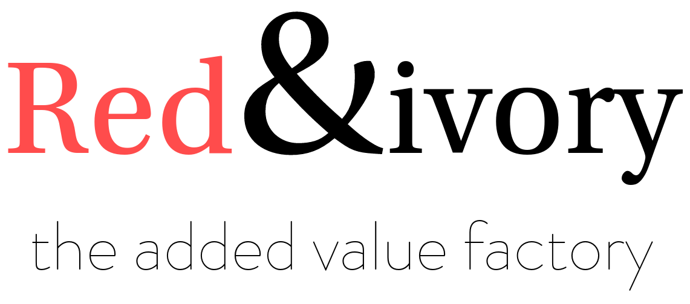

<!doctype html>
<html lang="en">

  <head>
    <meta charset="utf-8">

    <title>Meteor presentations</title>

    <meta name="description" content="Meteor presentations">
    <meta name="author" content="Pieter Soudan">

    <meta name="apple-mobile-web-app-capable" content="yes" />
    <meta name="apple-mobile-web-app-status-bar-style" content="black-translucent" />

    <meta name="viewport" content="width=device-width, initial-scale=1.0, maximum-scale=1.0, user-scalable=no">

    <link rel="stylesheet" href="css/reveal.min.css">
    <link rel="stylesheet" href="css/theme/moon.css" id="theme">

    <!-- For syntax highlighting -->
    <link rel="stylesheet" href="lib/css/zenburn.css">

    <!--link rel="stylesheet" href="/lib/css/pojoaque.css">
    <script src="/lib/js/highlight.pack.js"></script>
    <script>hljs.initHighlightingOnLoad();</script-->

    <!-- If the query includes 'print-pdf', use the PDF print sheet -->
    <script>
      document.write( '<link rel="stylesheet" href="css/print/' + ( window.location.search.match( /print-pdf/gi ) ? 'pdf' : 'paper' ) + '.css" type="text/css" media="print">' );
    </script>

    <!--[if lt IE 9]>
    <script src="lib/js/html5shiv.js"></script>
    <![endif]-->
  </head>

  <body>

    <div class="reveal">

      <!-- Any section element inside of this container is displayed as a slide -->
      <div class="slides">
        <section data-markdown>
<script type="text/template">
# Meteor talks
#### [Who are we?](/#/1/0)
#### [Why do we use meteor?](/#/2/0)
##[1. Learning meteor. Step by step.](/learning-meteor.html)
##[2. The observer pattern.](/observer-pattern.html)
##[3. A reusable set of components.](/reusable-components.html)
##[4. Building large scale web apps.](/large-scale-web-apps.html)
</script>
        </section>
        <section>
<section data-markdown>
<script type="text/template">
# Who are we?
</script>
</section>
<section data-markdown data-state="rni" data-background="white">
<script type="text/template">



### http://redandivory.com

an antwerp-based webdev shop
</script>
</section>
<section data-markdown data-state="rni" data-background="white">
<script type="text/template">
### 8 years of web-dev experience
using open source

mainly the usual LAMP infrastructure

Symfony2 enthousiasts
</script>
</section>
<section data-markdown data-state="rni" data-background="white">
<script type="text/template">
### shifted from websites to web-apps
only recently concentrating on (mobile) web-apps
</script>
</section>
<section data-markdown data-state="rni" data-background="white">
<script type="text/template">
### meteor!
switched (almost) completely to meteor development since april 2013.
</script>
</section>
<section data-markdown data-state="rni" data-background="white">
<script type="text/template">
### team
3 fulltime developers.
#### Looking for 2 more ;)
</script>
</section>
</section>

<section>
<section data-markdown>
<script type="text/template">
# Why do we use meteor?
</script>
</section>
<section data-markdown>
<script type="text/template">
## Full-stack framework
All you need is meteor.

Certainly for rapid prototyping or building MVPs
</script>
</section>
<section data-markdown>
<script type="text/template">
## Reactive / declarative principles
It's a blessing once you stop thinking in procedures
</script>
</section>
<section data-markdown>
<script type="text/template">
## Embraces the eco-system
npm, jquery, markdown, svg, d3, ...
</script>
</section>
<section data-markdown>
<script type="text/template">
## ease of use
no overhead if you don't need it

as complex as you want it to be

From 3 file mini-apps to large scale modular 
</script>
</section>

<section data-markdown>
<script type="text/template">
## meteor WILL be disruptive for the webdev sector
it will gain a lot of attention once it reaches 1.0

early adopter agencies will benefit from their head-start
</script>
</section>
</section>
      </div>

    </div>

    <script src="lib/js/head.min.js"></script>
    <script src="js/reveal.min.js"></script>

    <script>

      // Full list of configuration options available here:
      // https://github.com/hakimel/reveal.js#configuration
      Reveal.initialize({
        controls: true,
        progress: true,
        history: true,
        center: true,

        slideNumber: true,

        width: 1200,
        height: 860,

        theme: Reveal.getQueryHash().theme, // available themes are in /css/theme
        transition: Reveal.getQueryHash().transition || 'concave', // default/cube/page/concave/zoom/linear/fade/none

        // Parallax scrolling
        //parallaxBackgroundImage: 'http://upload.wikimedia.org/wikipedia/commons/b/b2/ESO-_Stellar_Cluster_NGC_2093_in_the_LMC-phot-34g-04-fullres.jpg',
        //parallaxBackgroundSize: '2100px 900px',

        // Optional libraries used to extend on reveal.js
        dependencies: [
          { src: 'lib/js/classList.js', condition: function() { return !document.body.classList; } },
          { src: 'plugin/markdown/marked.js', condition: function() { return !!document.querySelector( '[data-markdown]' ); } },
          { src: 'plugin/markdown/markdown.js', condition: function() { return !!document.querySelector( '[data-markdown]' ); } },
          { src: 'plugin/highlight/highlight.js', async: true, callback: function() { hljs.initHighlightingOnLoad(); } },
          { src: 'plugin/zoom-js/zoom.js', async: true, condition: function() { return !!document.body.classList; } },
          { src: 'plugin/notes/notes.js', async: true, condition: function() { return !!document.body.classList; } }
        ]
      });

    </script>
    <script>
      (function(i,s,o,g,r,a,m){i['GoogleAnalyticsObject']=r;i[r]=i[r]||function(){
      (i[r].q=i[r].q||[]).push(arguments)},i[r].l=1*new Date();a=s.createElement(o),
      m=s.getElementsByTagName(o)[0];a.async=1;a.src=g;m.parentNode.insertBefore(a,m)
      })(window,document,'script','//www.google-analytics.com/analytics.js','ga');

      ga('create', 'UA-820083-20', 'redandivory.com');
      ga('send', 'pageview');

    </script>
  </body>
</html>
